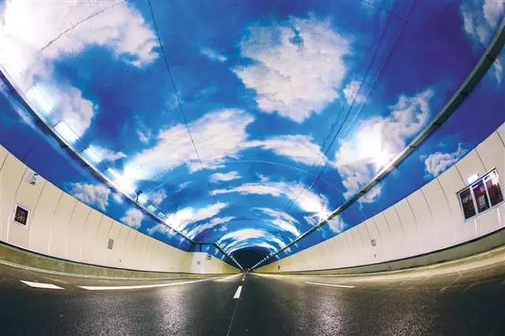

Tunnels are important to ensure safety on all passengers. The zipline go through varius air tunnels like a sky train. This would make it safer for people riding it. We wish to provide a fun experience through this while also making it engaging. A drone would fly through these ziplines trains to monitor the pathways you chose while also adjusting to any route changes.
